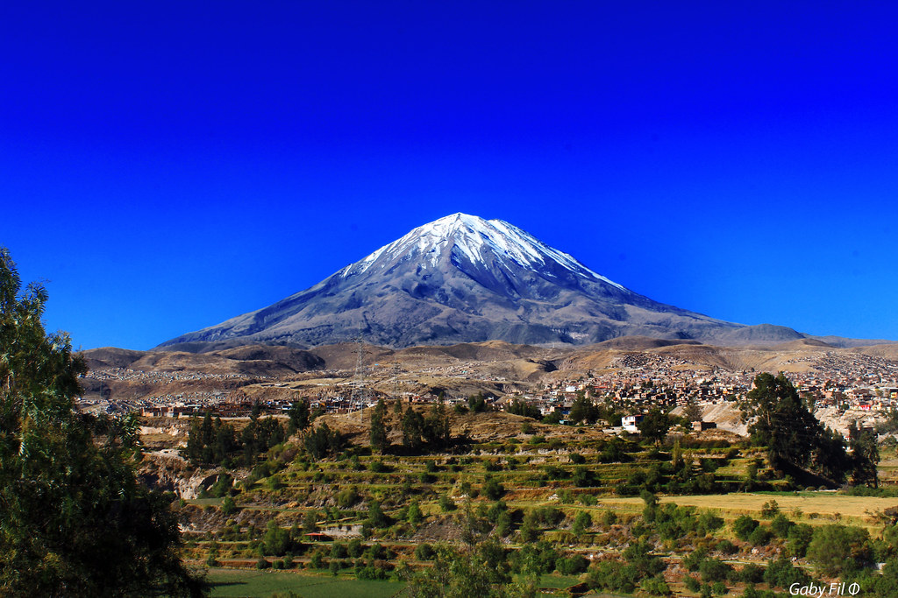

<html>

</html>

<head>
    <title>Lugares imperdibles de visitar en Perú</title>
    <link rel="stylesheet" href="style.css"
</head>

<body>
    <h1>Lugares imperdibles en Perú</h1>

    <section>
        <h2> Machu Picchu</h2>
        <article>
            <p>Machu Picchu es una antiguedad inca ubicada en Cusco</p>
        </article>
        <ul>
            <Li>Explorar las ruinas antiguas</Li>
            <Li>Visitar la puerta del Sol</Li>
            <Li>Realizar el Cmino Inca</Li>
        </ul>
        
        <p>Más información en <a target="_blank" href=https://patrimoniomundial.cultura.pe/sitiosdelpatrimoniomundial/santuario-hist%C3%B3rico-de-machu-picchu">Y tu que planes></a></p>
    </section>
    <section>
        <h2> Volcan Misti</h2>
        <article>
            <p>El Volcan se encuentra en Arequipa</p>
        </article>
        <ul>
            <Li>Vuelo de los Condores</Li>
            <Li>Visitar el estadio de la UNSA</Li>
            <Li>Comer tu queso helado</Li>
        </ul>
        
        <p>Más información en <a target="_blank" href=https://www.perurail.com/es/destinos/arequipa/">Y tu que planes></a></p>
    </section>
    <section>
        <h2> Lago Titicaca</h2>
        <article>
            <p>El Lago Titicaca se encuentra en Puno</p>
        </article>
        <ul>
            <Li>Visita la Isla Esteves</Li>
            <Li>Visita la isla de los Uros</Li>
            <Li>No te pierdas la deliciosa gastronomia</Li>
        </ul>
        
        <p>Más información en <a target="_blank" href=https://www.perurail.com/es/destinos/arequipa/">Y tu que planes></a></p>
    </section>


</body>

<footer>

</footer>